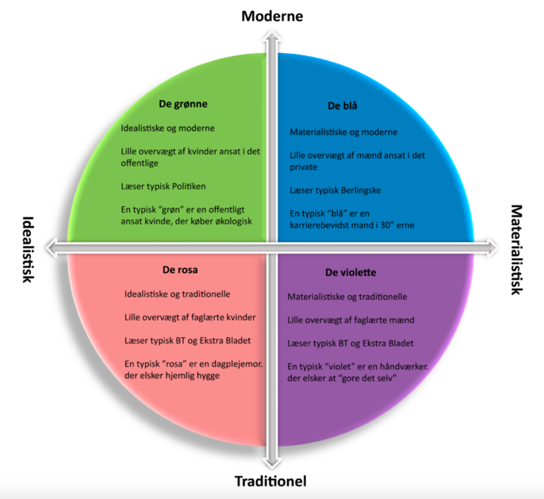

Kommunikation er nøglen til alt kontakt med omverdenen.
Kommunikation er en række af forskellige ting, som sammen bliver til det vi afsender.
Kongruent kommunikation, er når kommunikation er i overensstemmelse.
Dette betyder at det er kommunikation hvor f.eks. kropssprog og ordvalg matcher.
inkongruent kommunikation, er når kommunikation ikke er i overensstemmelse.
Dette betyder at det er kommunikation hvor f.eks. kropssprog og ordvalg ikke matcher.
Synkron kommunikation, er når kommunikationen forgår fra begge parter, på samme tid.
Dette kunne f.eks. være 2 personer, der snakker sammen.
Asynkron kommunikation, betyder at kommunikationen forgår skrifteligt, men ikke på samme tid.
Dette kunne f.eks. være en E-mail, hvor der ikke nødvendigvis er direkte kommunikation
Er hvad der siges.
Hvordan det siges.
Et paradigme, er en måde at se verdenen på, altså et verdenssyn.
Det samfundsvidenskabelige paradigme, har fokus på at afsenderen kan få et budskab ud.
Dette er også det vi kalder for Transmission.
Samfundsvidenskabelige modeller
Der findes nogen forskellige modeller, til hvordan man kan lave kommunikation, med det samfundsvidenskabelige paradigme.
Det humanistiske paradigme, har i modsæt til det samfundsvidenskabelige fokus på modtageren.
Der er fokus på at afsender og modtager sammen bestemmer budskabet. Det kan også kendes på at være en dialog
Humanistiske modeller
Der findes nogen forskellige modeller, til hvordan man kan lave kommunikation, med det humanistiske paradigme.
Vi bruger tekster til at hjælpe med at komme ud med vores budskab, det gøres bedst ved hjælp af følgende råd.
Dette er de forskellige medier vi kommer til at skrive til.
Webtekster gælder om at have interaktion, brugeroplevese og give en oplevese til den travle læser.
På de sociale medier, er det svært at opsætte regler og rammer for hvad man skal gøre.
Her gælder det om at arbejde inden for de rammer der er på forskellige sociale medier.
Dette kan være ved at bruge den lingo der bliver brugt på platformen.
Nyhedskriterierne er dem vi bruge, for at kunne opnå det hurtige blikfang.
Noget der har grundlæggende betydning eller konsekvens for mange mennesker.
Noget der fascinerer eller chokerer. Ofte de små, skæve historier.
Når sager eller personer er på kollisionskurs.
Noget som læseren kan genkende sig selv i.
noget der er oppe i tiden. Historien må gerne udspringe af stof som i forvejen cirkulerer i andre medier.
Usability handler om at gøre digitale produkter, så brugbare som muligt.
Det fortæller noget om, hvad brugen er, og hvornår noget opleves som brugbart.
En usability-evaluering af et website fortæller i hvilken grad websitet opleves som brugbart, for brugeren.
De oplevelser, som brugeren har med et websites usability, kan som udgangspunkt deles op i tre kategorier:
Hvad bruges Brugertesten til?
Udføresel af Brugertesten
Varigheden af selve brugertesten bør ikke overskride 1,5 time per testdeltager.
Opgave skabelon
Eksempel på en opgaveskabelon kunne f.eks. være:
Introduktionen
Under testperioden
Under opsamling og afslutning
Gode råd til testlederen
Hvad bruges Gangstertesten til?
Udførsel af Gangstertest
Gangstertesten bliver lavet ved at, starte på en tilfældig underside, og så gennemgå en række spørgsmål, og derefter give dem en score baseret på hvor godt eller skidt det fremstår af siden, fra 0-3
Spørgsmålene
Point systemet
Dette betyder at siden kan opnå et totalt antal point på 18. Dette kan herefter bruges til at undersøge om navigationen er god eller dårlig.
Hvad bruges Kortsortering til?
Udførsel af Kortsortering
Kortsortering findes i 2 varianter, den åbne og lukket test. Den åbne test, betyder at testdeltageren, selv skal oprette og navngive grupper af kort, undervejs i testen. Derimod er der i den lukkede test forvalgte kategorier, som brugeren skal fordele kortene i.
Trin for den åbne test
Trin for den lukkede test
Hvad bruges Spørgeskema til?
Spørgeskemaer kan bruges på to forskellige måder, den kvalitative, eller den kvantitative.
kvantitativ
kvalitative
Indledning
Et godt spørgeskema har altid en indledning, der kort informere testdeltageren om følgende:
Spørgsmålene
Det kan være rigtig smart at starte ud med lette og hurtige spørgsmål, som køn, alder eller postnummer.
Dette gøres for at deltageren vender sig til måden at svarer på og flydende begynde på de sværer spørgsmål.
Det er derudover også vigtigt at give testdeltageren præcise svar muligheder, så du kan få de mest konkrete resultater.
Hvad bruges Ekspertvurdering til?
En ekspertvurdering er en systematisk måde at gennemgå et website på, hvor man vurderer siden ud fra en række retningslinjer inden for usability. Der kan være tale om én eller flere eksperter, og det kan være én selv, og det kan være en ekspert på det domæne/fagområde, som websitet beskæftiger sig med.
Udføresel af ekspertvurdering
Udførslen er delt op i 3 faser
I en ekspert vurdering bruges der et log-skema, hvor eksperterne kan noterer de problemer, de finder på websitet
Skemaet
Alvorsgraderne
Spørgsmålene
Det kan være rigtig smart at starte ud med lette og hurtige spørgsmål, som køn, alder eller postnummer.
Dette gøres for at deltageren vender sig til måden at svarer på og flydende begynde på de sværer spørgsmål.
Det er derudover også vigtigt at give testdeltageren præcise svar muligheder, så du kan få de mest konkrete resultater.
Systemstatus
Websitet bør altid holde brugeren informeret om, hvad der sker, gennem passende feedback inden for et passende tidsrum.
Sammenhæng mellem website og den virkelige verden
Websitet bør tale brugerens sprog med ord og vendinger, som brugeren er bekendt med, frem for tekniske vendinger. Websitet bør desuden føre virkelighedsnære dialoger og lade informationer komme frem i en naturlig og logisk rækkefølge.
Bruger-kontrol og -frihed
Brugere vælger ofte funktioner ved en fejltagelse og har brug for en tydeligt markeret ”nødudgang” for at komme væk fra en uønsket position uden at være nødt til at gennemgå en forlænget dialog. Websitet bør understøtte, at brugere kan fortryde handlinger og starte forfra.
Konsistens og standarder
Det bør ikke være nødvendigt for brugeren at vurdere, om forskellige ord eller handlinger betyder det samme. Websitet bør følge platformens konventioner.
Forhindring af fejl
Websitet bør i højere grad forhindre, at fejl opstår, end at give brugbare fejlmeddelelser. Websitet bør undgå fejl-lignende tilstande eller præsentere brugeren for en bekræftelse, før det udfører den pågældende handling.
Hellere genkendelse end brug af hukommelse
Websitet bør minimere belastningen af brugerens hukommelse ved at gøre objekter, handlinger og muligheder synlige. Brugeren bør ikke være tvunget til at huske informationer fra en del af websitet til en anden. Instruktioner for brug af websitet bør være synlige eller lette at genfinde, når de er nødvendige.
Fleksibilitet og effektivitet i brugen
Genveje, som ikke bemærkes af begynder-brugeren, vil ofte forøge interaktions-hastigheden for ekspertbrugeren, således at systemet kan tilfredsstille både den erfarne og den uerfarne bruger. Websitet bør tillade brugeren at skræddersy ofte anvendte handlinger.
Æstetisk og minimalistisk design
Websitet bør ikke indeholde information, som er irrelevant eller sjælendt brugt. Enhver ekstra enhed af information i dialogen med systemet konkurrerer med de relevante enheder af information og formindsker deres relative synlighed.
Hjælp brugeren med at opdage og komme tilbage efter fejl
Fejlmeddelelser bør forklares i et simpelt sprog (uden tekniske koder), så de præcist indikerer problemet og på en konstruktiv måde foreslår en løsning.
Hjælp og dokumentation
Selvom det er bedre, hvis systemet kan anvendes uden dokumentation, kan det være nødvendigt at tilbyde hjælp og dokumentation. Dokumentation af denne karakter bør være let at søge i, bør være fokuseret på brugerens aktuelle problem, bør være opstillet i konkrete trin for gennemførelse og bør ikke være for omfattende
Emnet omhandler digitale strategier og målgrupper på SoMe platforme. Når vi kommunikerer med noget, vil sælge noget, oplyse noget eller frem med et budskab m.m., så er det vigtigt at kende sin målgruppe. Samtidig er det lige så vigtigt at bruge den rigtige kanal for markedsføring til netop dén målgruppe
Minerva modellen er en model, der indeholder 5 segmenter, der hver især repræsenterer en del af den danske befolkning. De 5 segmenter er opdelt efter 5 forskellige farver
Dette segment indeholder typisk personer med høj indkomst, et stort forbrug, og som gerne søger status blandt resten af befolkningen. Størstedelen er mænd, men det indeholder også kvinder. Personer i denne målgruppe vil typisk være tilhænger af partier som Venstre, Liberal Alliance og Konservative.
Personer i denne målgruppe er også veluddannede, men de går mere op i det moralske aspekt, når de køber produkter. Størstedelen er kvinder. De er typisk tilhængere af moderne venstreorienterede partier og er generelt fællesskabsorienterede personer. Det blå og det grønne segment udgør hver især 25% af alle danskere over 13 år.
Dette segment indeholder primært mænd, der også har et stort forbrug. Dog er personerne her med en mindre indkomst og lægger mere vægt på traditioner. Af politiske partier er vi igen i blå blok, men med Dansk Folkeparti som mindst lige så populære som de andre.
Primært kvinder med lav indtægt og med bosteder uden for de større byer. De har familien i centrum og en traditionel interesse, der kan udøves i hjemmet. De er ofte tiltrukket af partier som Socialdemokratiet og Dansk Folkeparti. Det violette og det rosa segment udgør hver 20% af danskerne.
Dette segment er svært at gøre rede for; det er oftest unge mennesker, der endnu ikke ved, hvor de skal placere sig. De har ingen klar profil og er derfor placeret midt i modellen. De udgør cirka 10% af danskerne over 13 år.
INDSÆT INFORMATION NÅR DU FINDER ONLINE KOMMUNIKATION BOGEN
Det er vigtigt for os som MMD at vide hvad immaterielret er, fordi det er let at komme i problemer.
Der findes programmer og selvskaber, som finder folk der overtræder den immaterieleret, og rejse sag mod disse.
Derfor er det vigtigt at vi ved noget om det, så vi nemmere kan undgå at komme i problemer
Ophavsret eller på amerikansk copyright, refereret til som ©
For at kunne få ophavsret, for et produkt, kræver det at produktet har originalitet, samt er skabt af personen selv.
Dog betyder dette ikke at alle rettighederne er ens. Her er 3 eksempler på ophavsret
Immaterielle rettigheder, eller IPR (”Intellectual Property Rights”) påpeger, at man har ejendomsret over idéer og konstruktioner, også selvom de ikke er fysiske.
Altså betyder det at der er retsbeskyttelse af intellektuelle produkter, som f.eks. malerier, litteratur, fotos, skulpturer, opfindelser og forretningskendeteg (logo m.m.)
Licenser er en systematisk og organiseret måde at distribuere rettigheder på, som er meget udbredt indenfor software. Det opstod i forbindelse med udviklingen og udbredelsen af styresystemet Linux, og det skulle sikre, at ingen kunne kræve copyright, men at alle udviklere delte deres frembringelser med verden gratis.
Nogle licensmetoder forhindrer kommerciel udnyttelse, mens andre tillader det. En licensaftale mellem to parter, hvor licensgiver aftaler med licenstager om tilladelse til at bruge rettigheden mod en licensafgift. Udbredte licensmetoder er MIT, (L)GPL og APACHE.
Creative Commons er en række licensmetoder, der dækker over forskellige licenser.
Når man gerne vil finde ud af, hvordan verden ser ud fra ens brugeres perspektiv, så er interviewet svært at komme udenom. Et interview giver et indblik i, hvordan brugere oplever og bruger ens produkter eller service. Derudover kan det give et indblik i brugerens normer, begrebsuniverser og deres tolkninger af verden. Der er flere parametre, der kan afgøre, om et interview bliver godt; kemien mellem interviewer og interviewperson, interviewteknik og interviewguidens kvalitet
Steinar kvales 7 gode råd om interviews, er som følger:
Den gode interviewguide referer til nogen "regler" man skal forholde sig til, når man laver et interview.
Lave færre spørgsmål:
En af de mange udfordringer med et interview er ofte at man har for mange spørgsmål, som man gerne vil have svar på.
Dette giver mindre tid til fordybelse i de svar der bliver givet. Dette gør at der er mulighed for man ikke forstår svaret man har modtaget, fordi man skynder sig videre, og derved ødlægger samtalen.
Det er derfor vigtigt at give plads, og istedet stille opfølgende spørgsmål til de svar du modtager i interviewet.
Opfølgende spørgsmål udspringer af svarene
Vent med de direkte spørgsmål:
Når man laver en interview guide, kan der ofte være spørgsmål, som man virkelig gerne vil have svar på, det kan derfor komme en naturligt, at man skriver dem først i sin interviewguide.
Dette gør at man ofte kommer til at fomulerer dem som direkte spørgsmål, som går ind og påvirker samtalen med ens egne ord, antagelser samt begreber.
Det kan derfor være til fordel, at man lader personen der bliver interviewet tale først, det kan være ved at få dem til at snakke omkring dere oplevelser med emnet.
Stil konkrete spørgsmål:
Hvad er konkrete spørgsmål?
Læg en ramme om interviewet:
Det er vigtigt at have en ramme omkring sit interview, så man ved hvordan tiden skal fordeles, men det hjælper også på kvaliteten af den data man indsamler undervejs i interviewet.
Dette er fordi man skaber en grundtone og en stemning, som kan hjælpe interviewdeltageren med at blive afslappet og komfortable med situationen.
En ramme omkring et interview kunne være følgende:
Online adfærd, handler om de skjulte strategier, der bliver brugt, for at få os til at klikke.
Emnet tager udgangspunkt i Nathalie Nahais forskning og hendes anbefalede strategier, "psykologien bag online overtalelse".
Online psykologi er et værktøj, der gør det muligt at designe bedre websites og UX.
Når vi skal være overbevisende i vores markedsføring, skal vi sørge for at påvirke alle de 3 dele af hjernen; det primale, emotionelle og rationelle.
Hjernen kan også opdeles i to systemer
Ved at vide hvad der styrer vores egne, samt vores modtagers beslutninger og adfærd, kan vi tilrettelægge vores kommunikation på en mere effektiv måde.
Der er to former for overtalelse, den Systematiske og den Heuristiske